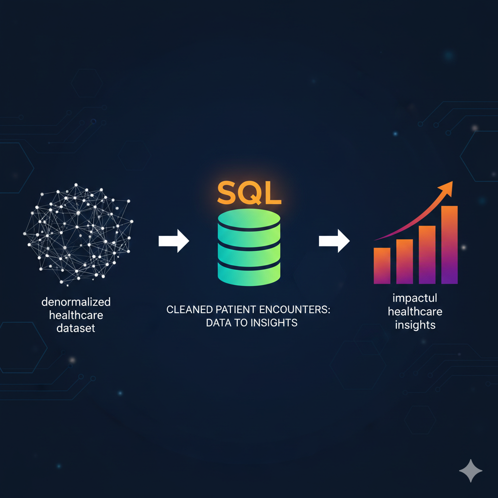
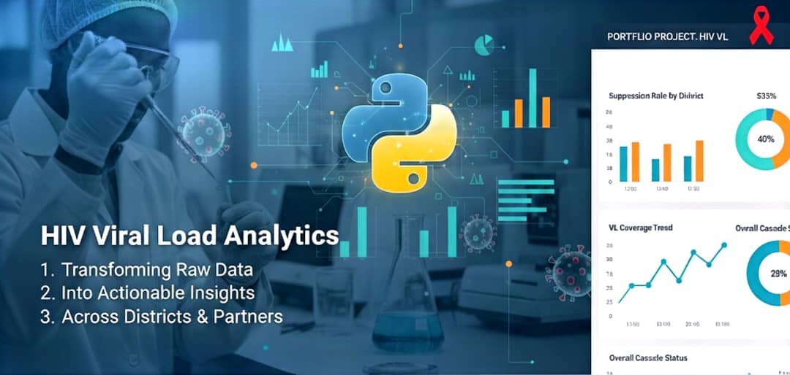
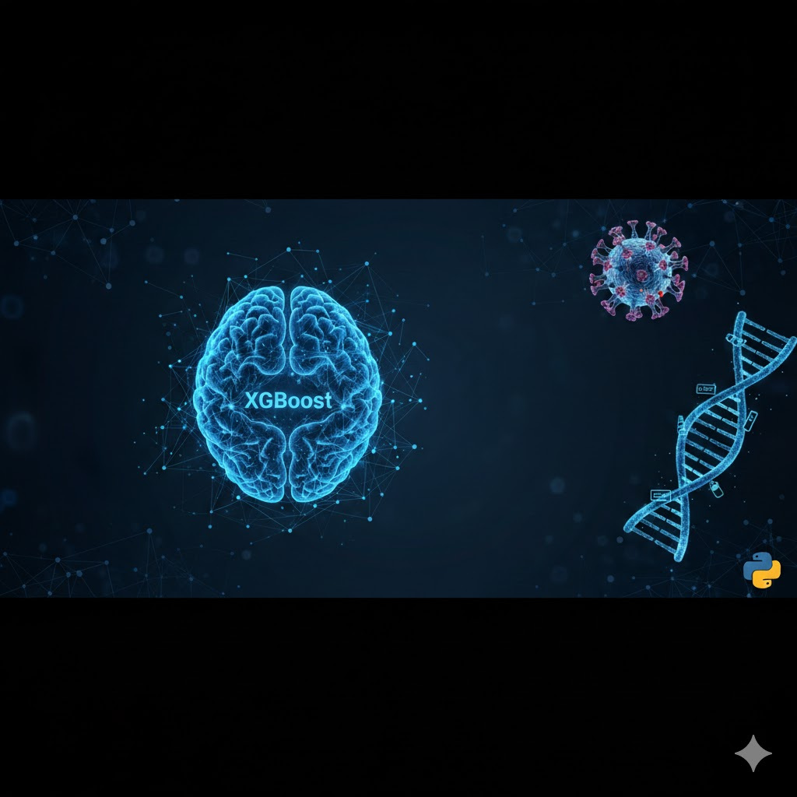
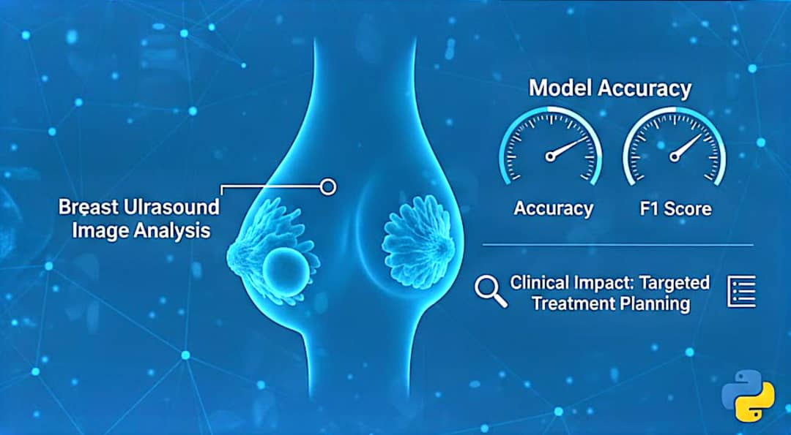
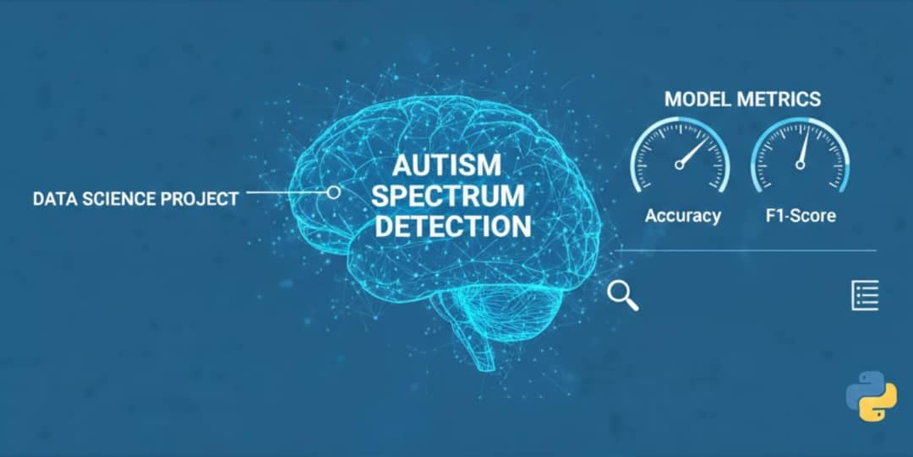

This project explores and analyzes a real-world denormalized healthcare dataset on diabetic patient encounters. The data was cleaned, normalized into a relational structure, and analyzed using SQL to generate impactful healthcare insights.

This Excel dashboard explores the mental, physical, and emotional health impact of remote work based on a global survey .

The project mirrors real-world HIV program analytics, transforming raw records into actionable cascade insights across hospitals, districts, partners, and age groups..
The goal is to demonstrate how non-invasive voice features, combined with robust evaluation metrics, can support early screening and clinical decision-making, especially in low-resource or telemedicine settings..

The model leverages routinely collected clinical, behavioral, health system and treatment-related variables commonly available in HIV programs in low- and middle-income settings..

This project focuses on predicting breast cancer malignancy (benign vs. malignant) using machine learning. The goal was to evaluate multiple models and identify the best-performing algorithm for accurate predictions.

A predictive screening support model to enhance early identification of Autism Spectrum Disorder (ASD) using structured behavioral data.
This project demonstrates how data-driven tools can support clinical decision-making, improve early intervention pathways, and strengthen preventive healthcare systems.